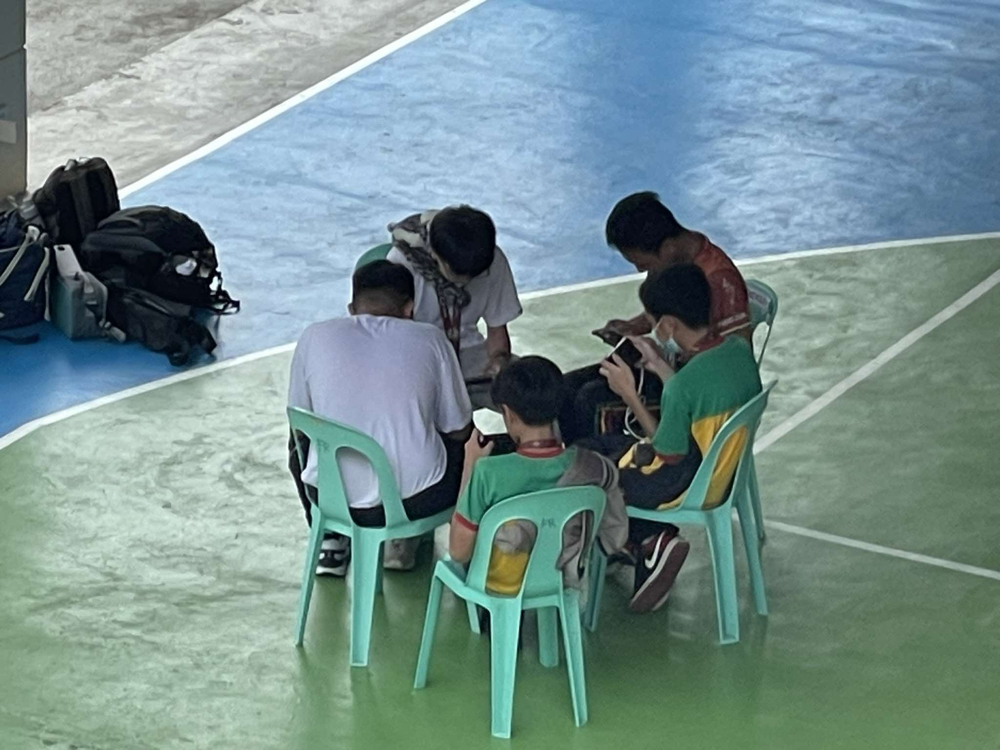
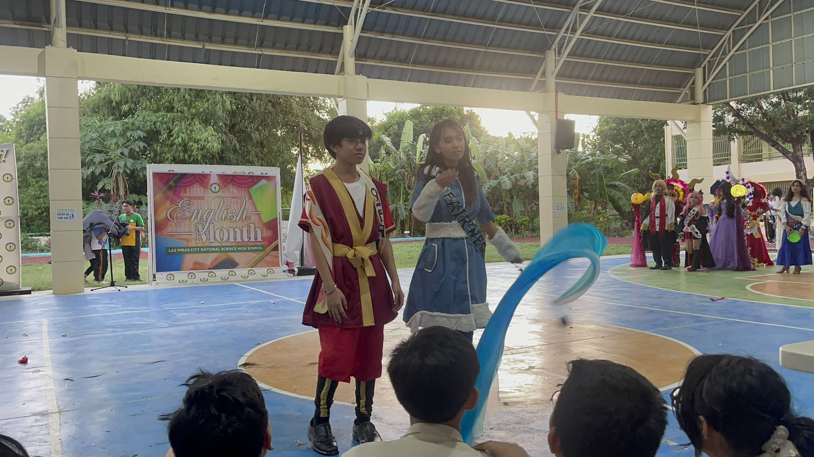

Hi! My name is Ethan Haley Maranan, the shy student from Grade 9 Fairness. I love to play video games with my cousins and listen to music while I study. This second quarter has been a hectic ride, full of exhausting, stressful, and challenging tasks, but in exchange for many exciting school activities. My goals for this school year are to have fun and achieve high honors.
This webpage shows my experiences during all of the events and performance tasks this quarter.
2nd Quarter Activities ( •̀ ω •́ )✧
Teachers' Day
On October 4, 2024, our section celebrated Teachers' Day with our adviser and teachers. During classes, our classmates acted as "mini-teachers," substituting for a teacher for the day. After that, we all ate delicious food and played games.
Intramurals 2024

The 2024 intramurals of Las Pinas City National Science High School showcased each student's talent in sports such as basketball, volleyball, chess, and more. The opening ceremony started with a bang, filled with cheers and performances of senior high school students, followed up by the Mr. and Ms. Intramurals competition. I was a substitute player for table tennis in my team.
Historical Icon Contest
During AP month, our section participated in a competition in which we designed a dress from scratch for our designated representative to celebrate UN month. Here, me and my classmates exhibit our creativity, artistry, teamwork, and unity to finish creating the outfit.
English Month
For November, we celebrated the English Month. On its opening day, each student cosplayed their chosen book character.
Mr. and Ms. Booklandia

The Mr. and Ms. Booklandia contest showcased the participants' costumes based on their chosen book character.
Sample Codes for 2nd Quarter Lessons
Lesson 1 & 2
Lesson 3
Lesson 4
Lesson 5
Lesson 6 & 7
2nd Quarter Reflection
I have gained a ton of new and valuable knowledge in programming during ICT class. CSS (Cascading Style Sheets) will help us in different ways. It could assist us in designing a more visually appealing website or organizing the codes we have to input. I can utilize what I learned in the future since this would be useful when promoting my business or company.
It is still shocking how we have gone through half of the school year because it seems like it just started a few months ago. We were all consumed by how many activities we had to do as a section. There were occurrences where I had to cram to finish all my assignments and performance tasks because I did not manage my time well. In the following quarters, I am determined to learn from the mistakes I made in my journey.
Overall, I enjoyed this quarter, even with its rocky paths. Numerous school events happened, and all were simply thrilling, from the breathtaking intramurals to the fun and joyful songs that will play in V-Pop. As a class, I would say that we have struggled plenty of times, but as I said earlier, I hope we can acknowledge our mistakes and be as one as a class. I wish that the next quarters would be even more fun.